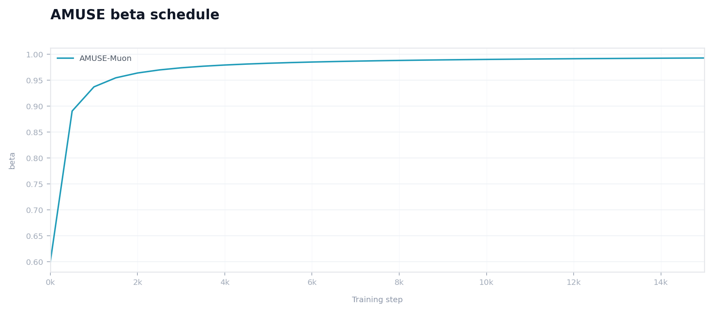
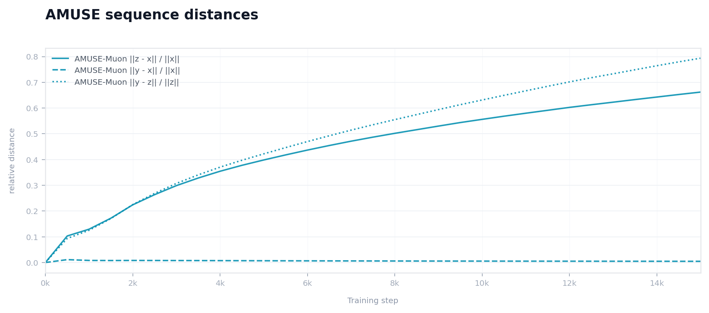
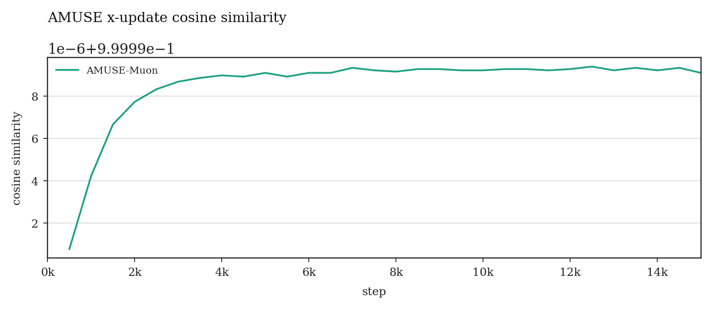

TinyShakespeare optimizer report
Same initialization, same train/validation split, and same seed across all compared optimizers.
The main figure emphasizes validation-loss trajectories; auxiliary figures isolate the AMUSE schedule and sequence diagnostics.
Best run
AdamW · 1.535
Best step
6,000
Margin to next
0.006

Figure 1. Validation loss against training step for the benchmarked optimizers.
The right panel zooms into the late-training region to expose the final spread between methods.
| Optimizer | Best val | Final val | Best step | Wall time | Tokens/sec |
|---|---|---|---|---|---|
| AdamW | 1.535 | 1.614 | 6,000 | 3m 27s | 594,848 |
| Muon | 1.541 | 1.597 | 5,000 | 3m 44s | 547,653 |
| MuonLike | 1.541 | 1.600 | 5,000 | 4m 36s | 444,729 |
| AMUSE-Muon | 1.582 | 1.582 | 15,000 | 4m 59s | 410,472 |

Figure 2. The AMUSE schedule parameter $\beta_t$ over training.

Figure 3. Relative distances between the x, y, and z AMUSE sequences.

Figure 4. Cosine similarity between consecutive AMUSE x-sequence updates.